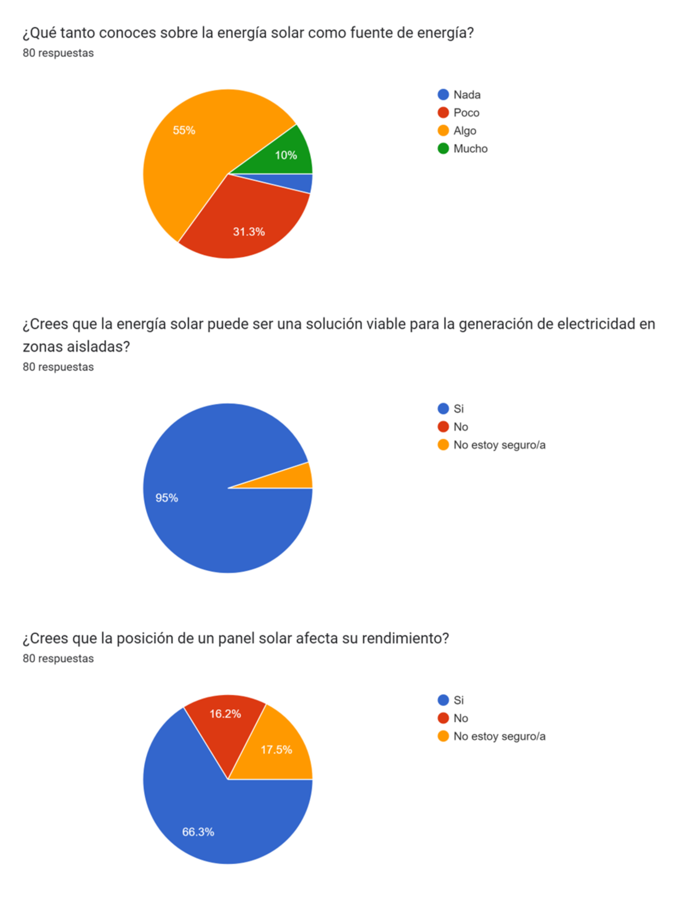
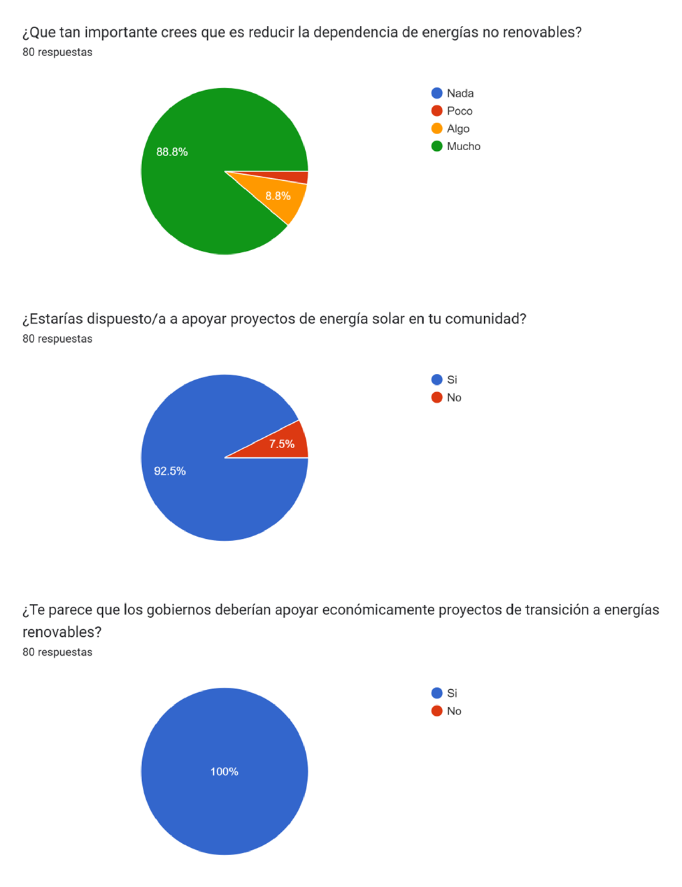
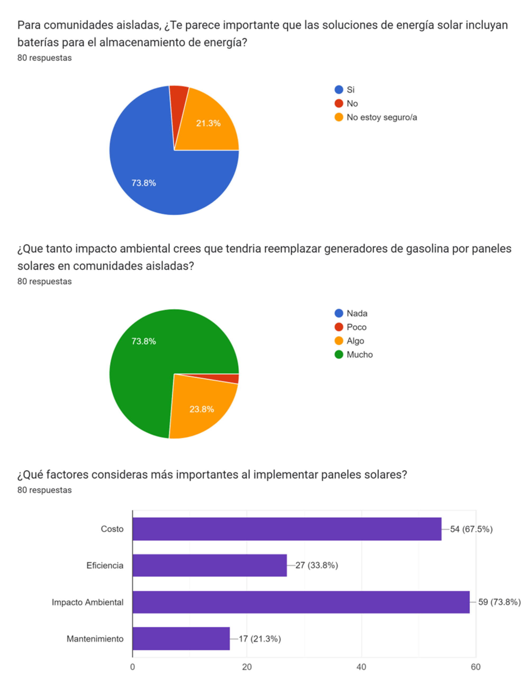
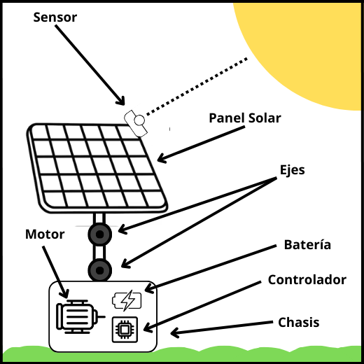
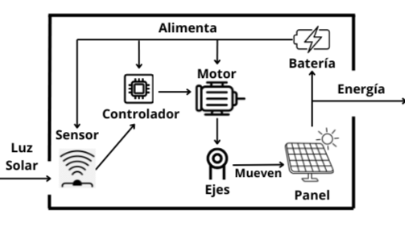

Tomás Contreras Arizabaleta y Jairo Alexis Castañeda
Contenido
1. Justificación
1.1 Situación Problémica
1.2 Instrumentos para Levantamiento de Información
2. Marco Teórico Conceptual
2.1 Normativa Actual
3. Propuesta
3.1 Introducción a Solar Tracker
3.2 Detalles Técnicos
3.2.1 Componentes
3.2.2 Funcionamiento General
3.3 Comparación con Ejemplos Actuales
3.3.1 Costos
3.3.2 Eficiencia
4. Conclusión
1. Justificación
1.1 Situación Problémica
En la actualidad, la dependencia de fuentes de energía no renovables ha generado un impacto negativo en el medio ambiente, impulsando la necesidad de soluciones energéticas más limpias y sostenibles. Aunque los paneles solares han demostrado ser una opción viable para la generación de energía renovable, su eficiencia puede verse comprometida por la variación en la posición del sol a lo largo del día. Los paneles solares fijos no aprovechan al máximo la radiación solar disponible, lo que reduce su capacidad para generar energía de manera óptima.
Volver a la tabla de Contenido
1.2 Instrumentos para Levantamiento de Información
Para el levantamiento de información se usó un diagrama de espina de pescado con el fin
de conocer las razones de esta problemática, seguido de una encuesta a la comunidad para
recabar la opinión de la comunidad sobre su conocimiento acerca de la energía solar, el nivel de
apoyo hacia proyectos de este tipo y su comprensión de la problemática planteada. A
continuación, el diagrama de espina de pescado junto con su desarrollo.

Nota. Diagrama de Espina de pescado con sus principales problemáticas. Figura elaborada por el autor.
1. Factores Tecnológicos
- Captación pobre: Paneles con baja capacidad de generación y captación de energía en
condiciones de poca luz.
- Eficiencia limitada: Materiales de los paneles que no permiten una conversión óptima de
luz solar en electricidad.
2. Recursos Financieros
- Presupuesto limitado: Falta de fondos suficientes en las comunidades remotas para
mejorar los sistemas actuales.
- Mantenimiento costoso: Gastos elevados en la reparación y mantenimiento de equipos
solares en áreas de difícil acceso.
3. Condiciones ambientales
- Variaciones climáticas: Frecuentes condiciones de nubosidad o clima adverso que
reducen la captación de energía solar.
- Variaciones estacionales: Cambios en la duración e intensidad de la luz solar según la
estación, afectando la producción energética.
4. Infraestructura
- Ubicación inadecuada: Paneles colocados en zonas con sombras u obstrucciones que
limitan la exposición solar.
- Instalación compleja: Problemas para trasladar e instalar equipos en comunidades remotas,
afectando la calidad del sistema.
5. Recursos Humanos
- Falta de capacitación: Personal no capacitado en la instalación y mantenimiento de
sistemas solares eficientes.
- Escasez de expertos locales: Dificultad para encontrar profesionales especializados en
tecnología solar en áreas remotas.
6. Factores Sociales y de Conciencia
- Preferencia por generadores: Algunos sectores de la comunidad prefieren fuentes
convencionales debido a costumbres o hábitos.
- Falta de apoyo institucional: Limitado respaldo o incentivo de organismos
gubernamentales para mejorar la infraestructura solar en comunidades aisladas.
La encuesta se estructuró en tres tipos de preguntas: conocimiento sobre energía solar,
apoyo a la transición hacia energías renovables y comprensión de la problemática junto con sus
posibles soluciones. Esta encuesta se realizó durante un período de cinco días y se difundió a través
de redes sociales. Constaba de 9 preguntas y se obtuvieron un total de 80 respuestas, la mayoría
provenientes de personas en el rango de edad de 35 a 50 años.
Conocimiento de energía solar:

Apoyo a la transición hacia energías renovables:

Comprensión de la problemática y sus posibles soluciones:

A partir del diagrama de espina de pescado y los resultados de la encuesta, se evidencia no
solo una problemática creciente, sino también el nivel de conocimiento que tiene la comunidad
sobre este problema y su disposición a apoyar en la búsqueda de una solución.
Volver a la tabla de Contenido
2. Marco Teórico Conceptual
2.1 Normativa Actual
Las normativas son numerosas y extensas; a continuación, se mencionarán las más
importantes:
Eficiencia Energética:
• Norma Internacional: ISO 50001.
• Normativa Nacional: Resolución 1980 de 2017 del Ministerio de Minas y Energía.
Uso de Energías Renovables:
• Norma Internacional: Acuerdo de París (2015).
• Normativa Nacional: Ley 1715 de 2014.
Tecnologías Limpias:
• Norma Internacional: Recomendaciones de la Agencia Internacional de Energía (AIE).
• Normativa Nacional: Ley 697 de 2001.
Integración a la Red Eléctrica:
• Norma Internacional: Estándares del Instituto de Ingeniería Eléctrica y Electrónica
(IEEE).
• Normativa Nacional: Resolución CREG 030 de 2018.
Gestión de Residuos:
• Norma Internacional: Directiva Europea 2008/98/EC.
• Normativa Nacional: Ley 1672 de 2013.
Normas ISO Relevantes:
• ISO 9001:2015 - Sistema de gestión de la calidad.
• ISO 14001:2015 - Gestión ambiental.
• ISO 45001:2018 - Gestión de la salud y seguridad en el trabajo.
• ISO 50001:2018 - Gestión de la energía.
• ISO/IEC 61010-1:2010 - Requisitos de seguridad para equipos eléctricos de medida y
control.
Cumplimiento Medioambiental:
• Norma Internacional: Convención Marco de las Naciones Unidas sobre el Cambio
Climático (CMNUCC) y Protocolo de Kioto.
• Normativa Nacional: Decreto 1076 de 2015.
Evaluación de Impacto Ambiental (EIA):
• Norma Internacional: Estándares del Banco Mundial y la Corporación Financiera
Internacional (IFC).
• Normativa Nacional: Ley 99 de 1993.
Legislación sobre Energía Renovable:
• Norma Internacional: Agenda 2030 y ODS 7.
• Normativa Nacional: Ley 1715 de 2014.
Derechos de Propiedad y Uso del Suelo:
• Norma Internacional: Directrices del Banco Mundial.
• Normativa Nacional: Ley 388 de 1997 y Decreto 1077 de 2015.
Participación Comunitaria y Consulta Previa:
• Norma Internacional: Convenio 169 de la OIT.
• Normativa Nacional: Ley 21 de 1991.
Incentivos Fiscales:
• Norma Internacional: Compromisos del Acuerdo de París.
• Normativa Nacional: Ley 1715 de 2014.
Regulación del Mercado Energético:
• Norma Internacional: Directrices de la Agencia Internacional de Energía (AIE).
• Normativa Nacional: Resolución CREG 030 de 2018.
Para información mas detallada sobre el marco normativo, consulte el siguiente documento: Aquí
Volver a la tabla de Contenido
3. Propuesta
3.1 Introducción a Solar Tracker
Solar Tracker es un sistema innovador diseñado para mejorar la eficiencia de los paneles solares mediante el seguimiento automático de la posición del sol a lo largo del día. A diferencia de los sistemas solares fijos, los Solar Trackers ajustan el ángulo de los paneles en respuesta al movimiento solar, maximizando la captura de energía y optimizando la generación eléctrica. Este tipo de tecnología es especialmente beneficiosa en zonas remotas o con acceso limitado a la red eléctrica, ya que permite aprovechar al máximo la radiación solar disponible y aumentar la autonomía energética. Además de contribuir a la reducción de la dependencia de fuentes de energía convencionales, los Solar Trackers representan una solución sostenible que apoya la transición hacia energías renovables y disminuye la huella de carbono.
Volver a la tabla de Contenido
3.2 Detalles Técnicos
3.2.1 Componentes
Cada Solar Tracker cuenta con los siguientes componentes:

Nota. Componentes de un Solar Tracker. Figura elaborada por el autor.
Listado de componentes:
• Panel Solar Fotovoltaico.
• Soporte del panel.
• 2 Ejes.
• 1 Motor.
• 1 Sensor de luz solar.
• 1 Controlador.
• 1 Batería.
3.2.2 Funcionamiento General
Solar Tracker es un sistema compuesto por paneles solares móviles dispuestos
consecutivamente, diseñados para seguir la trayectoria del sol a lo largo del día y maximizar la
captación de radiación solar. Cada panel se ajusta en dos ejes, permitiendo una orientación precisa
que asegura una mayor exposición al sol. Equipados con sensores de luz, los paneles detectan la
posición exacta del sol en tiempo real y envían esta información a un controlador central. Este
controlador procesa los datos de los sensores y, mediante motores, ajusta la posición de los paneles
para garantizar que siempre estén alineados de forma óptima. El sistema de movimiento en dos
ejes aumenta significativamente la eficiencia energética de los paneles, alcanzando entre el 25% y
el 28% de conversión de energía, frente al 15%-20% de los paneles fijos. En términos de
producción diaria, los paneles móviles generan entre 0.325 kWh y 0.37 kWh, logrando un
incremento de hasta un 23.33% en comparación con sistemas fijos

Nota. Interacción entre los componentes. Figura elaborada por el autor.
Volver a la tabla de Contenido
3.3 Comparación con Ejemplos Actuales
3.3.1 Costos
Panel Solar Común
El costo de un panel solar tradicional, compuesto únicamente por el panel solar y los
sistemas de montaje, es significativamente más bajo en comparación con un Solar Tracker. Los
precios de los paneles solares convencionales varían entre $1.000.000 COP y $1.500.000 COP,
dependiendo de la calidad y la marca.
Solar Tracker
El costo de un panel Solar Tracker, que incluye componentes adicionales como sensores,
controladores, motores y sistemas de montaje, es
considerablemente más alto. El costo por unidad de un Solar Tracker oscila entre $1.750.000 COP
y $4.900.000 COP. Sin embargo, esta diferencia de precio se justifica por el aumento en la
eficiencia energética, ya que los paneles móviles pueden generar entre un 23% y 28% más de energía en
comparación con los paneles fijos.
Producción en Masa
La fabricación en masa de Solar Trackers permite reducir el costo por unidad, gracias a las
economías de escala. Si se produce un número elevado de paneles solares móviles, se estima que
el costo podría reducirse entre un 15% y 25%. Esto llevaría el costo por unidad a un rango de entre
$1.312.500 COP y $4.165.000 COP, dependiendo de la escala de producción. Esta reducción hace
que el sistema Solar Tracker sea más accesible a largo plazo, tanto para áreas aisladas como
conectadas a la red eléctrica.
Apoyos Gubernamentales
En Colombia, los proyectos de energía renovable, incluidos los sistemas de Solar Tracker,
pueden beneficiarse de incentivos fiscales bajo la Ley 1715 de 2014. Esto incluye exenciones de
impuestos para la importación de equipos y materiales utilizados en la instalación de tecnologías
solares. Además, programas como "Energía Solar para Todos" ofrecen subsidios que ayudan a
reducir significativamente los costos iniciales de implementación.
Sostenibilidad y Recuperación de la Inversión
A pesar del mayor costo inicial, los Solar Trackers tienen una vida útil de aproximadamente
25 años, lo que permite una generación continua y eficiente de energía. Se estima que los ingresos
generados durante la vida útil de un panel solar móvil podrían ser tres veces mayores que el costo
de producción. El tiempo de recuperación de la inversión se calcula entre 5 a 7 años, lo que asegura
la viabilidad económica del proyecto a largo plazo. Además, los sistemas conectados a la red
pueden generar ingresos adicionales, contribuyendo aún más a la recuperación de la inversión.
En resumen, aunque los costos iniciales de los Solar Trackers son más altos en comparación
con los paneles solares convencionales, la mayor eficiencia energética, la producción en masa, los
incentivos gubernamentales y los beneficios sostenibles hacen que los Solar Trackers sean una
opción económicamente viable y atractiva a largo plazo.
3.3.2 Eficiencia
Los Solar Trackers, con una eficiencia que varía entre el 25% y el 28%, producen entre
0.375 kWh (375 Wh) y 0.42 kWh (420 Wh) por día. Esto se traduce en un aumento de la
producción de energía en comparación con los paneles solares fijos. La producción neta de los
paneles móviles representa un
incremento significativo de entre un 8% y un 23% en relación con los paneles fijos.

Nota. Gráfico comparativa entre la energía generada por un panel solar común y un Solar Tracker entre las 6:00 y las 18:00. Figura elaborada por el autor.
Volver a la tabla de Contenido
4. Conclusión
El sistema Solar Tracker ofrece una solución práctica y eficiente para optimizar el aprovechamiento de la energía solar mediante un sistema de seguimiento del sol. Este sistema permite maximizar la captación de radiación solar, incrementando la eficiencia energética en comparación con sistemas fijos. Su diseño, que combina sensores y un sistema de control en dos ejes, facilita una adaptación continua a la posición del sol, lo cual es especialmente útil en regiones con alta irradiancia solar.
Además, el Solar Tracker responde a la necesidad de generar energía de manera sostenible en zonas remotas, proporcionando una fuente confiable y limpia de electricidad que reduce la dependencia de fuentes no renovables. Este sistema se destaca por su capacidad de mejorar la autonomía energética en áreas desatendidas, alineándose con iniciativas de sostenibilidad y con los objetivos de transición hacia energías limpias. En conclusión, el Solar Tracker representa un avance en la tecnología de aprovechamiento solar, demostrando el valor de su sistema de seguimiento para maximizar la eficiencia energética y contribuir a un modelo de energía más ecológico.